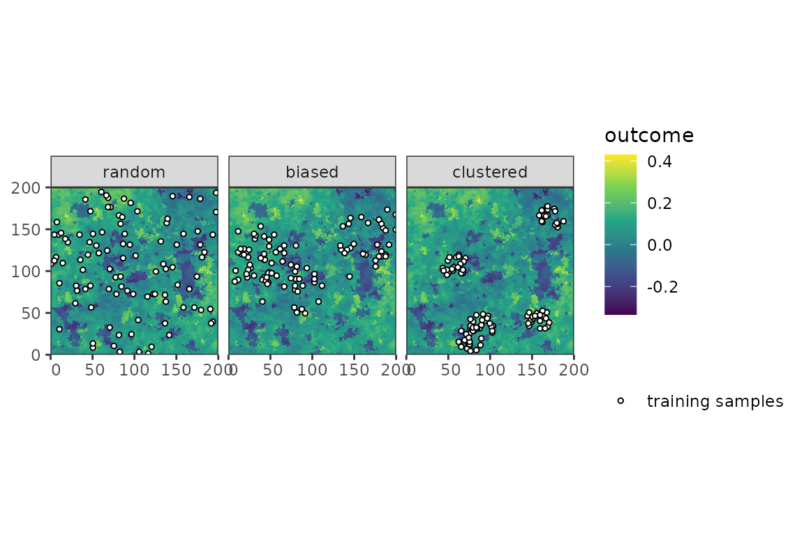
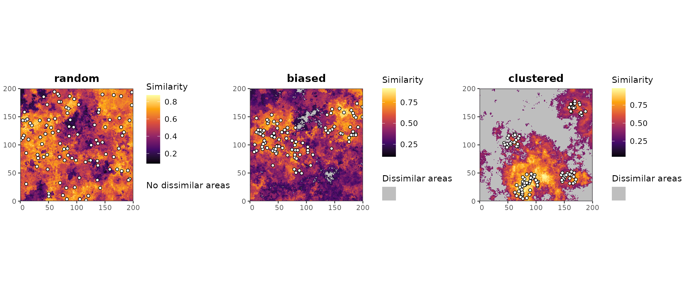
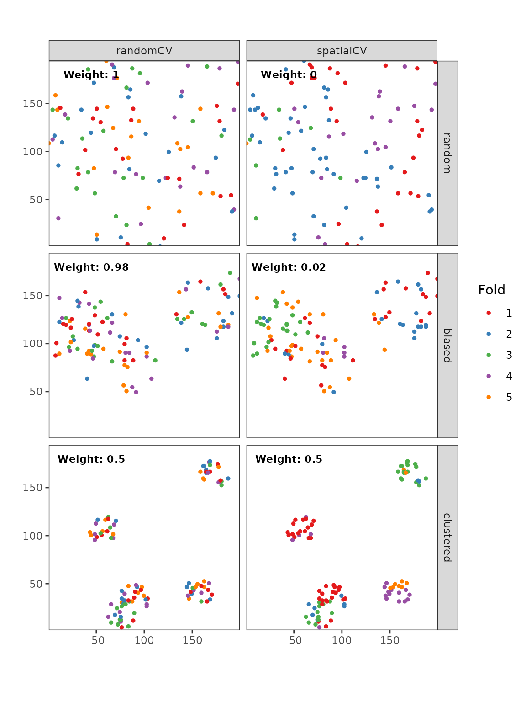

PDAV
Prediction-domain-adaptive-validation.RmdIntroduction
This vignette provides an overview over the different methods of prediction-domain adaptive evaluation. First, I will briefly summarize the (dis-)advantages of the different methods (based on my subjective impression), and then I will briefly show how they work using a simulated case study with three different sampling designs. For a more detailed description of the methods, please refer to the dedicated vignettes.
Overview of the currently developed methods:
| Method | Advantages | Disadvantages | Critical Parameters |
|---|---|---|---|
| NNDM | - direct quantification of the prediction situation
through nearest-neighbour distances - NND plots reveal situations where prediction situation cannot be matched during CV - works natively with distances in the geographic or feature space |
- high computational costs since it uses
LOO-CV - May remove large fractions of the training samples and thus lead to unstable models - depends on the estimated autocorrelation range (though not so important as in spatial+ CV used in DA-CV) |
- phi: Autocorrelation threshold up to which
Nearest-Neighbour distances are matched- min_train:
fold balancing |
| kNNDM | - direct quantification of the prediction situation
through nearest-neighbour distances - NND plots reveal situations where prediction situation cannot be matched during CV - more computational efficient than NNDM - works natively with distances in the geographic or feature space |
- less flexible in matching the NND distributions than NNDM | - maxp: maximum fold size allowed: higher numbers lead
to more imbalanced splits, but also may resemble the prediction
situation better |
| DA-CV | - creates a map that depicts areas of inter- vs extrapolation, which can be useful for subsequent sampling or for uncertainty assessment | - less direct approximation of the prediction
situation - No inspection method available to assess if the prediction situation can be matched during CV - Matches the prediction situation in the feature space, but mixes spaces in the spatial+ resampling method - requires calculating the weighted average of two validation statistics, which might be problematic for metrics other than RMSE |
- autoc_threshold: block size in spatial
cross-validation |
| TWCV | - applies weighting to match the prediction situation, which is more flexible than resampling-based matching of the prediction situation | - integration of geographic distances implicit and
weighting of the predictor vs geographical space is automatically done
by the raking algorithm - Depends on the resampling method (e.g., random resampling might not create geographical distances that are comparable to the prediction situation) |
Case Study
library(PDAV)
library(dplyr)
#>
#> Attaching package: 'dplyr'
#> The following objects are masked from 'package:stats':
#>
#> filter, lag
#> The following objects are masked from 'package:base':
#>
#> intersect, setdiff, setequal, union
library(caret)
#> Loading required package: ggplot2
#> Loading required package: lattice
library(terra)
#> terra 1.9.27
library(sf)
#> Linking to GEOS 3.12.1, GDAL 3.8.4, PROJ 9.4.0; sf_use_s2() is TRUE
library(simsam)
library(ggplot2)
library(cowplot)
library(tidyterra)
#>
#> Attaching package: 'tidyterra'
#> The following object is masked from 'package:stats':
#>
#> filter
library(ggnewscale)
set.seed(100)Simulate predictors and response
r <- PDAV:::generate_rast()
predictor_stack <- r[[setdiff(names(r), "outcome")]]
cate_rasters <- which(names(r) %in% c("forest", "grass"))
samples <- PDAV:::generate_samples(r, 100)

DA-CV
DA-CV (Wang et al. (2025a)) uses adversial validation (AV) to predict the probability that a prediction location is similar to the training samples. Then it calculates a RMSE based on random CV, as well as spatial+ CV (Wang et al. (2023)) and weights both of them according to the relative area of similar cells (random CV) and dissimilar cells (spatial+ CV).
results <- lapply(unique(samples$sampling), function(smpling) {
samples_smpl <- samples |>
filter(sampling == smpling) |>
select(!sampling)
da_cv(
samples = samples_smpl,
predictors = r,
response = "outcome",
folds_k = 5,
autoc_threshold = 1
#cate_col_start = min(cate_rasters),
#cate_col_end = max(cate_rasters)
)
})
#> Setting levels: control = 0, case = 1
#> Setting direction: controls < cases
#> Setting levels: control = 0, case = 1
#> Setting direction: controls < cases
#> Setting levels: control = 0, case = 1
#> Setting direction: controls < cases
names(results) <- unique(samples$sampling)For randomly distributed samples, the AV classifier has a performance of AUC = 0.6. This is then normalized to D = 0, because the classifier is not better than random guessing at distinguishing whether a prediction location is similar or dissimilar to the training samples; see Wang et al. (2025b), section 2.1, for more information. The threshold is then calculated as T(D) = 0.5 × 0, which is 0. This means that all prediction locations are considered similar to the training samples, and no extrapolation correction is required, as shown in the following map. Consequently, all weight is assigned to random CV.
For clustered samples, the AV classifier achieves a performance of AUC = 0.82. This leads to D = (0.82 - 0.5) / (1 - 0.5) = 0.64. The threshold is then T(D) = 0.5 × 0.64 = 0.32. Hence, all prediction cells with a similarity score lower than 0.32 are classified as dissimilar. The relative fraction of prediction locations classified as similar to the sampling locations is 0.5, while the fraction classified as dissimilar is 0.5.
lapply(unique(samples$sampling), function(smpling) {
plot(results[[smpling]]) +
new_scale_fill() +
geom_sf(data = samples[samples$sampling == smpling, ], shape = 21, fill = "white") +
coord_sf(expand = FALSE, datum = st_crs(samples[samples$sampling == smpling, ], )) +
ggtitle(smpling) +
theme(
legend.position = "right",
plot.title = element_text(face = "bold", hjust = 0.5)
)
}) |>
plot_grid(plotlist = _, nrow = 1, align = "vh")
Figure 3: Similarity maps resulting from the AV classifier.
Lastly, the resulting cross-validation fold assignments can be used to calculate the weighted RMSE of a spatial predictive model.
form <- as.formula(paste0("outcome~", paste0(names(predictor_stack), collapse = "+")))
pgrid <- data.frame(mtry = 6, splitrule = "variance", min.node.size = 5)
weighted_RMSE <- lapply(unique(samples$sampling), function(smpling) {
samples_smpl <- samples |>
filter(sampling == smpling) |>
mutate("randomCV" = results[[smpling]]$folds_RDM, "spatialCV" = results[[smpling]]$folds_SP) |>
st_drop_geometry()
folds_random <- CAST::CreateSpacetimeFolds(samples_smpl, spacevar = "randomCV", k = 5)
folds_spatial <- CAST::CreateSpacetimeFolds(samples_smpl, spacevar = "spatialCV", k = 5)
train_cntrl_random <- trainControl(
method = "CV",
index = folds_random$index,
indexOut = folds_random$indexOut,
savePredictions = TRUE
)
train_cntrl_SP <- trainControl(
method = "CV",
index = folds_spatial$index,
indexOut = folds_spatial$indexOut,
savePredictions = TRUE
)
rand_mod <- train(
form,
data = samples_smpl,
method = "ranger",
trControl = train_cntrl_random,
tuneGrid = pgrid
)
spat_mod <- train(
form,
data = samples_smpl,
method = "ranger",
trControl = train_cntrl_SP,
tuneGrid = pgrid
)
err_stats_rand <- CAST::global_validation(rand_mod)
err_stats_SP <- CAST::global_validation(spat_mod)
err_stats_weighted <- sqrt(
results[[smpling]]$weights[["similar"]] *
(err_stats_rand[["RMSE"]]^2) +
results[[smpling]]$weights[["different"]] * (err_stats_SP[["RMSE"]]^2)
)
prediction <- predict(r, rand_mod)
list(err_stats_weighted, prediction)
})
#> Registered S3 methods overwritten by 'CAST':
#> method from
#> plot.knndm PDAV
#> plot.nndm PDAV
#> Warning in nominalTrainWorkflow(x = x, y = y, wts = weights, info = trainInfo,
#> : There were missing values in resampled performance measures.
The RMSE obtained by DA-CV are 0.054 for the random sampling design, 0.045 for the biased sampling and 0.038 for the clustered design.